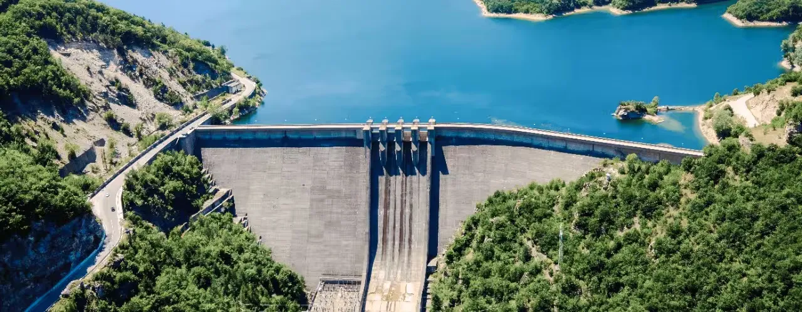

About the Client
A state-level water resources department undertaking an ambitious river linking project aimed at improving water availability for irrigation, drinking water, and industrial purposes across multiple districts.
The Challenge
The client needed detailed mapping, planning, and alignment studies to design canals, lift systems, and reservoir linkages for inter-basin water transfer. The project required large-scale surveying, hydrological modeling, and precise engineering integration across varied terrains.
The Solution
We delivered end-to-end geospatial, surveying, and engineering design services to support feasibility and planning for the river linking project.
Key components included:
- High-resolution satellite imagery interpretation and base mapping
- Ground control surveys and topographic surveys
- Canal alignment studies and optimization
- Hydraulic modeling for reservoir interconnectivity
- Detailed design support for canal sections, lift irrigation systems, and command area development
- GIS-based asset mapping and digital integration for project management
The Impact
The project helped lay the groundwork for large-scale water resource reallocation with tangible benefits: